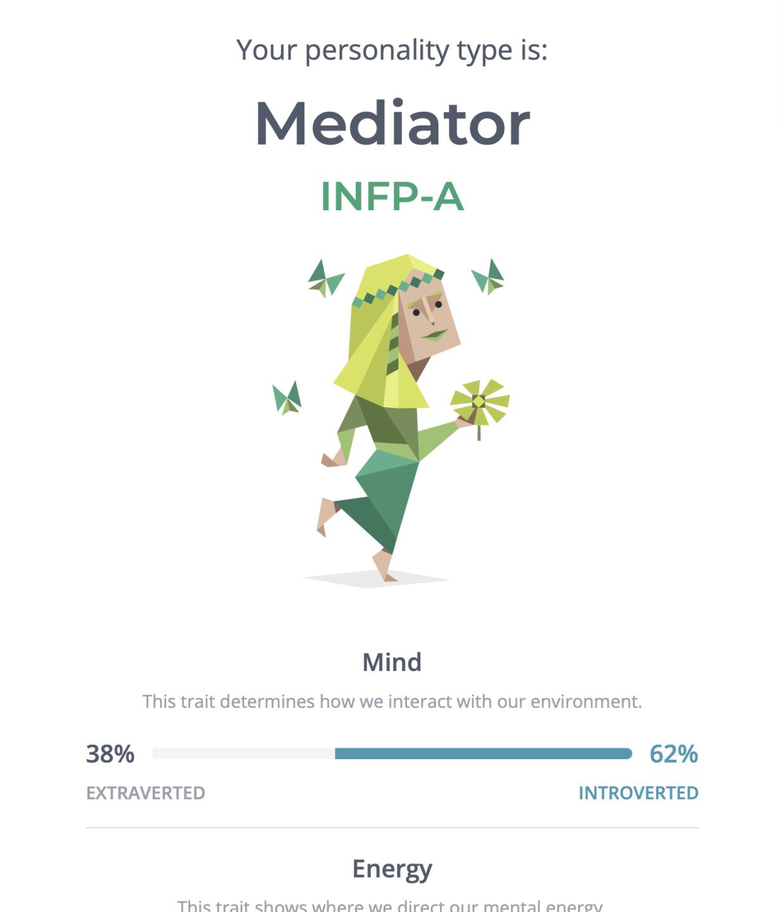

Name: Tang Minh Tri
DOB: 06/03/2003
RMIT Student ID: s3927579
Learning Style
Vietnamese is my nationality, and I’m currently living and studying in the city named after Uncle Ho. From first grade to grade tenth, I studied in Vietnam, but I went abroad to seek a new education which then graduated from Ben Lippen School. As for fluency in languages, English is the most fluent one, after the mother tongue, Vietnamese, then comes Japanese. I love reading books, self-studying other areas aside from IT, and playing sports with friends in my pastime. One interesting fact about me is that I’d love to advance my knowledge in the psychology field and others’ emotions and behaviours. It excites me as I understand the reason behind someone’s actions. As I take a trip down to the memory land, dystopia movies and pc games pop out. At that time, the little me was excited with the scenes where supreme robots ruled over humanity and how the future was shaped. I started to delve into the IT world more as I grew older. To satisfy my creativity, photoshop and making 3D animations were my first steps. After that, I have been learning how to code, for example, Python and Java. In the future, I would love to create my own program where psychology and computer science can cross over.
Because of being an Mediator (INFP), I tend to be quiet in a crowded atmosphere, open-minded about most things, and imaginative so I apply a caring, and creative approach to everything I planned out. The possessions of a mediator are Introverted, Intuitive, Feeling, and Prospecting. As a result of having INFP traits, the sensibility affects the way I study effectively. Since I am an auditory and visual scholar, watching processes or listening to the description improves my cognitive skills about the problems, and what I remember about them. If my team ever has to cope with complicated drawbacks, my creativity will come in like a lifejacket. Creativity test specifies myself as a creative person who should specialize in coming up with various ideas, then let other people implement it.
